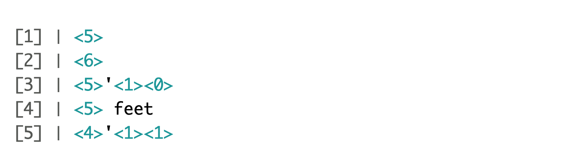
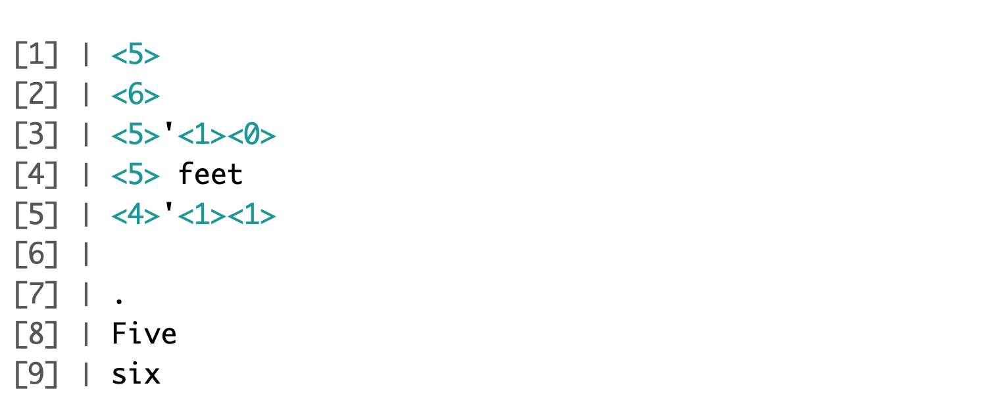
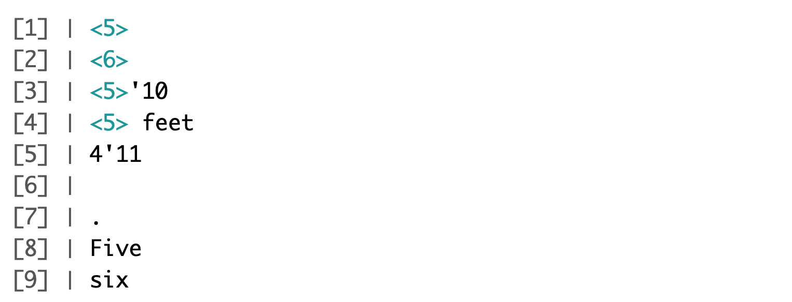
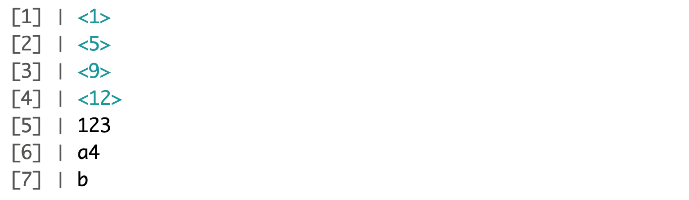

16 String processing
One of the most common data wrangling challenges involves extracting numeric data contained in character strings and converting them into the numeric representations required to make plots, compute summaries, or fit models in R. Also common is processing unorganized text into meaningful variable names or categorical variables. Many of the string processing challenges a data scientist faces are unique and often unexpected. It is therefore quite ambitious to write a comprehensive section on this topic. Here we use a series of case studies that help us demonstrate how string processing is a necessary step for many data wrangling challenges. Specifically, we describe the process of converting the original, raw data from which we extracted the murders, heights, and research_funding_rates examples into the data frames we have studied in this book.
By going over these case studies, we will cover some of the most common tasks in string processing including extracting numbers from strings, removing unwanted characters from text, finding and replacing characters, extracting specific parts of strings, converting free form text to more uniform formats, and splitting strings into multiple values.
Base R includes functions to perform many of these tasks. The stringi package adds significant functionality over what is available in base R, especially for complex and diverse text processing needs. The stringr package provides consistent, simple, and user friendly wrappers around the stringi package. For example, in stringr, all the string processing functions start with str_. This means that if you type str_ and hit tab, R will auto-complete and show all the available functions. As a result, we don’t necessarily have to memorize all the function names. Another advantage is that in the functions in this package the string being processed is always the first argument, which means we can more easily use the pipe. Therefore, we will start by describing how to use the functions in the stringr package.
Most of the examples will come from the second case study which deals with self-reported heights by students, and most of the chapter is dedicated to learning regular expressions (regex) and functions in the stringr package.
16.1 The stringr package
In general, string processing tasks can be divided into detecting, locating, extracting, or replacing patterns in strings. We will see several examples. The table below includes the functions available to you in the stringr package. We split them by task. We also include the base R equivalent when available.
All these functions take a character vector as first argument. Also, for each function, operations are vectorized: the operation gets applied to each string in the vector.
Finally, we mention groups in this table. These will be explained in Section 16.4.9.
| stringr | Task | Description | Base R |
|---|---|---|---|
str_detect |
Detect | Is the pattern in the string? | grepl |
str_which |
Detect | Returns the index of entries that contain the pattern. | grep |
str_subset |
Detect | Returns the subset of strings that contain the pattern. |
grep with value = TRUE
|
str_locate |
Locate | Returns positions of first occurrence of the pattern in a string. | regexpr |
str_locate_all |
Locate | Returns position of all occurrences of the pattern in a string. | gregexpr |
str_view |
Locate | Show the first part of the string that matches the pattern. | |
str_view_all |
Locate | Show all the parts of the string that match the pattern. | |
str_extract |
Extract | Extract the first part of the string that matches the pattern. | |
str_extract_all |
Extract | Extract all parts of the string that match the pattern. | |
str_match |
Extract | Extract first part of the string that matches the pattern and the groups defined by the pattern. | |
str_match_all |
Extract | Extract all parts of the string that match the pattern and the groups defined by the pattern. | |
str_sub |
Extract | Extract a substring. | substring |
str_split |
Extract | Split a string into a list with parts separated by a pattern. | strsplit |
str_split_fixed |
Extract | Split a string into a matrix with a fixed number of parts separated by a pattern. |
strsplit with fixed = TRUE
|
str_count |
Describe | Count number of times a pattern appears in a string. | |
str_length |
Describe | Number of character in string. | nchar |
str_replace |
Replace | Replace first part of a string matching a pattern with another. | |
str_replace_all |
Replace | Replace all parts of a string matching a pattern with another. | gsub |
str_to_upper |
Replace | Change all characters to upper case. | toupper |
str_to_lower |
Replace | Change all characters to lower case. | tolower |
str_to_title |
Replace | Change first character of each word to upper and rest to lower case. | |
str_replace_na |
Replace | Replace all NAs with a new value. |
|
str_trim |
Replace | Remove white space from start and end of string. | |
str_c |
Manipulate | Join multiple strings. | paste0 |
str_conv |
Manipulate | Change the encoding of the string. | |
str_sort |
Manipulate | Sort the vector in alphabetical order. | sort |
str_order |
Manipulate | Provide index needed to order the vector in alphabetical order. | order |
str_trunc |
Manipulate | Truncate a string to a fixed size. | |
str_pad |
Manipulate | Add white space to string to make it a fixed size. | |
str_dup |
Manipulate | Repeat a string. |
rep then paste
|
str_wrap |
Manipulate | Wrap things into formatted paragraphs. | |
str_interp |
Manipulate | String interpolation. | sprintf |
16.2 Case study 1: self-reported heights
The dslabs package includes the raw data from which the heights dataset was obtained. You can load it like this:
These heights were obtained using a web form in which students were asked to enter their heights. They could enter anything, but the instructions asked for height in inches, a number. We compiled 1,095 submissions, but unfortunately the column vector with the reported heights had several non-numeric entries and as a result became a character vector:
class(reported_heights$height)
#> [1] "character"If we try to parse it into numbers, we get a warning:
x <- as.numeric(reported_heights$height)
#> Warning: NAs introduced by coercionAlthough most values appear to be height in inches as requested we do end up with many NAs:
Here are some of the entries that are not successfully converted:
reported_heights |>
mutate(new_height = as.numeric(height)) |>
filter(is.na(new_height)) |>
head(n = 10)
#> time_stamp sex height new_height
#> 1 2014-09-02 15:16:28 Male 5' 4" NA
#> 2 2014-09-02 15:16:37 Female 165cm NA
#> 3 2014-09-02 15:16:52 Male 5'7 NA
#> 4 2014-09-02 15:16:56 Male >9000 NA
#> 5 2014-09-02 15:16:56 Male 5'7" NA
#> 6 2014-09-02 15:17:09 Female 5'3" NA
#> 7 2014-09-02 15:18:00 Male 5 feet and 8.11 inches NA
#> 8 2014-09-02 15:19:48 Male 5'11 NA
#> 9 2014-09-04 00:46:45 Male 5'9'' NA
#> 10 2014-09-04 10:29:44 Male 5'10'' NAWe immediately see what is happening. Some of the students did not report their heights in inches as requested. We could discard these data and continue. However, many of the entries follow patterns that, in principle, we can easily convert to inches. For example, in the output above, we see various cases that use the format x'y" or x'y'' with x and y representing feet and inches, respectively. Each one of these cases can be read and converted to inches by a human, for example 5'4" is 5*12 + 4 = 64. So we could fix all the problematic entries by hand. However, humans are prone to making mistakes, so an automated approach is preferable. Also, because we plan on continuing to collect data, it will be convenient to write code that automatically corrects entries entered in error.
A first step in this type of task is to survey the problematic entries and try to define specific patterns followed by a large groups of entries. The larger these groups, the more entries we can fix with a single programmatic approach. We want to find patterns that can be accurately described with a rule, such as “a digit, followed by a feet symbol, followed by one or two digits, followed by an inches symbol”.
To look for such patterns, it helps to remove the entries that are consistent with being in inches and to view only the problematic entries. We thus write a function to automatically do this. We keep entries that either result in NAs when applying as.numeric or are outside a range of plausible heights. We permit a range that covers about 99.9999% of the adult population. We also use suppressWarnings to avoid the warning message we know as.numeric will gives us.
We apply this function and find the number of problematic entries:
problems <- reported_heights |>
mutate(inches = suppressWarnings(as.numeric(x))) |>
filter(is.na(inches) | inches < 50 | inches > 84) |>
pull(height)
length(problems)
#> [1] 292We can now view all the cases by simply printing them. If we do, we see that three patterns can be used to define three large groups within these exceptions.
1. A pattern of the form x'y or x' y'' or x'y" with x and y representing feet and inches, respectively. Here are ten examples:
#> 5' 4" 5'7 5'7" 5'3" 5'11 5'9'' 5'10'' 5' 10 5'5" 5'2"2. A pattern of the form x.y or x,y with x feet and y inches. Here are ten examples:
#> 5.3 5.5 6.5 5.8 5.6 5,3 5.9 6,8 5.5 6.23. Entries that were reported in centimeters rather than inches. Here are ten examples:
#> 150 175 177 178 163 175 178 165 165 180Once we see these large groups following specific patterns, we can develop a plan of attack.
- Convert entries fitting the first two patterns into one standardized one.
- Leverage the standardization to extract the feet and inches and convert to inches.
- Define a procedure for identifying entries that are in centimeters and convert them to inches.
- Check again to see what entries were not fixed and see if we can tweak our approach to be more comprehensive.
At the end, we hope to have a script that makes web-based data collection methods robust to the most common user mistakes.
Remember that there is rarely just one way to perform these tasks. Here we pick one that helps us teach several useful techniques. But surely there is a more efficient way of performing the task.
To achieve our goal, we will use a technique that enables us to accurately detect patterns and extract the parts we want: regular expressions (regex). But first, we quickly describe how to escape the function of certain characters so that they can be included in strings.
16.3 Escaping
To define strings in R, we can use either double quotes or single quotes:
s <- "Hello!"
s <- 'Hello!' Make sure you choose the correct single quote, as opposed to the back quote `.
Now, what happens if the string we want to define includes double quotes? For example, if we want to write 10 inches like this 10"? In this case you can’t use:
s <- "10""because this is just the string 10 followed by a double quote. If you type this into R, you get an error because you failed to close the double quote. To avoid this, we can use the single quotes:
s <- '10"'If we print out s we see that the double quotes are escaped with the backslash \.
s
#> [1] "10\""In fact, escaping with the backslash provides a way to define the string while still using the double quotes to define strings:
s <- "10\""In R, the function cat lets us see what the string actually looks like:
cat(s)
#> 10"Now, what if we want our string to be 5 feet written like this 5'? In this case, we can use the double quotes or escape the single quote
s <- "5'"
s <- '5\''So we’ve learned how to write 5 feet and 10 inches separately, but what if we want to write them together to represent 5 feet and 10 inches like this 5'10"? In this case, neither the single nor double quotes will work since '5'10"' closes the string after 5 and this "5'10"" closes the string after 10. Keep in mind that if we type one of the above code snippets into R, it will get stuck waiting for you to close the open quote and you will have to exit the execution with the esc button.
To achieve the desired result we need to escape both quotes with the backslash \. You can escape either character that can be confused with a closing quote. These are the two options:
s <- '5\'10"'
s <- "5'10\""Escaping characters is something we often have to use when processing strings. Another characters that often needs escaping is the backslash character itself. We can do this with \\. When using regular expression, the topic of the next section, we often have to escape the special characters used in this approach.
16.4 Regular expressions
A regular expression (regex) is a way to describe specific patterns of characters of text. They can be used to determine if a given string matches the pattern. A set of rules has been defined to do this efficiently and precisely and here we show some examples. We can learn more about these rules by reading a detailed tutorials1 2. The RStudio cheat sheet for stringr and regular expression3 is also very useful.
The patterns supplied to the stringr functions can be a regex rather than a standard string. We will learn how this works through a series of examples.
Throughout this section you will see that we create strings to test out our regex. To do this, we define patterns that we know should match and also patterns that we know should not. We will call them yes and no, respectively. This permits us to check for the two types of errors: failing to match and incorrectly matching.
16.4.1 Strings are a regex
Technically any string is a regex, perhaps the simplest example is a single character. So the comma , used in the next code example is a simple example of searching with regex.
pattern <- ","
str_detect(c("1", "10", "100", "1,000", "10,000"), pattern)
#> [1] FALSE FALSE FALSE TRUE TRUEAbove, we noted that an entry included a cm. This is also a simple example of a regex. We can show all the entries that used cm like this:
str_subset(reported_heights$height, "cm")
#> [1] "165cm" "170 cm"16.4.2 Special characters
Now let’s consider a slightly more complicated example. Which of the following strings contain the pattern cm or inches?
We can do this with two searches:
str_detect(s, "cm") | str_detect(s, "inches")
#> [1] TRUE TRUE FALSE FALSEHowever, we don’t need to do this. The main feature that distinguishes the regex language from plain strings is that we can use special characters. These are characters with a meaning. We start by introducing | which means or. So if we want to know if either cm or inches appears in the strings, we can use the regex cm|inches:
str_detect(s, "cm|inches")
#> [1] TRUE TRUE FALSE FALSEand obtain the correct answer.
Another special character that will be useful for identifying feet and inches values is \d which means any digit: 0, 1, 2, 3, 4, 5, 6, 7, 8, 9. The backslash is used to distinguish it from the character d. In R, we have to escape the backslash \ so we actually have to use \\d to represent digits. Here is an example:
yes <- c("5", "6", "5'10", "5 feet", "4'11")
no <- c("", ".", "Five", "six")
s <- c(yes, no)
pattern <- "\\d"
str_detect(s, pattern)
#> [1] TRUE TRUE TRUE TRUE TRUE FALSE FALSE FALSE FALSEWe take this opportunity to introduce the str_view function, which is helpful for troubleshooting as it shows us all matches for each string that has matches. Each match is surrounded by the characters < and >. Below, we see that 5 has one match and 5'10 has three matches.
str_view(s, pattern)
To view all strings, even if there wasn’t a match, we can use the match = NA parameter.
str_view(s, pattern, match = NA)
Another useful special character is \w which stands for word character and it matches any letter, number, or underscore.
There are many other special characters. We will learn some others below, but you can see most or all of them in the cheat sheet4 mentioned earlier.
16.4.3 Character classes
Character classes are used to define a series of characters that can be matched. We define character classes with square brackets []. So, for example, if we want the pattern to match only if we have a 5 or a 6, we use the regex [56]:
str_view(s, "[56]", match = NA)
Suppose we want to match values between 4 and 7. A common way to define character classes is with ranges. So, for example, [0-9] is equivalent to \\d. The pattern we want is therefore [4-7].
yes <- as.character(4:7)
no <- as.character(1:3)
s <- c(yes, no)
str_detect(s, "[4-7]")
#> [1] TRUE TRUE TRUE TRUE FALSE FALSE FALSEHowever, it is important to know that in regex everything is a character; there are no numbers. So 4 is the character 4 not the number four. Notice, for example, that [1-20] does not mean 1 through 20, it means the characters 1 through 2 or the character 0. So [1-20] simply means the character class composed of 0, 1, and 2.
Keep in mind that characters do have an order and the digits do follow the numeric order. So 0 comes before 1 which comes before 2 and so on. For the same reason, we can define lower case letters as [a-z], upper case letters as [A-Z], and [a-zA-z] as both.
Notice that \w is equivalent to [a-zA-Z0-9_].
16.4.4 Anchors
What if we want a match when we have exactly 1 digit? This will be useful in our case study since feet are never more than 1 digit so a restriction will help us. One way to do this with regex is by using anchors, which let us define patterns that must start or end at a specific place. The two most common anchors are ^ and $ which represent the beginning and end of a string, respectively. So the pattern ^\\d$ is read as “start of the string followed by one digit followed by end of string”.
This pattern now only detects the strings with exactly one digit:

The 1 does not match because it does not start with the digit but rather with a space, which is not easy to see.
16.4.5 Bounded quantifiers
For the inches part, we can have one or two digits. This can be specified in regex with quantifiers. This is done by following the pattern with curly brackets containing the number of times the previous entry can be repeated. We call the bounded because the numbers in the quantifier are limited by the numbers in the curly brackets. Later we learn about unbounded quantifiers.
We use an example to illustrate. The pattern for one or two digits is:

In this case, 123 does not match, but 12 does. To look for our feet and inches pattern, we can add the symbols for feet ' and inches " after the digits.
With what we have learned, we can now construct an example for the pattern x'y" with x feet and y inches.
pattern <- "^[4-7]'\\d{1,2}\"$"The pattern is now getting complex, but you can look at it carefully and break it down:
-
^= start of the string -
[4-7]= one digit, either 4,5,6 or 7 -
'= feet symbol -
\\d{1,2}= one or two digits -
\"= inches symbol -
$= end of the string
Let’s test it out:
yes <- c("5'7\"", "6'2\"", "5'12\"")
no <- c("6,2\"", "6.2\"","I am 5'11\"", "3'2\"", "64")
str_detect(yes, pattern)
#> [1] TRUE TRUE TRUE
str_detect(no, pattern)
#> [1] FALSE FALSE FALSE FALSE FALSEFor now, we are permitting the inches to be 12 or larger. We will add a restriction later as the regex for this is a bit more complex than we are ready to show.
16.4.6 White space \s
Another problem we have is spaces. For example, our pattern does not match 5' 4" because there is a space between ' and 4 which our pattern does not permit. Spaces are characters and R does not ignore them:
identical("Hi", "Hi ")
#> [1] FALSEIn regex, \s represents white space. To find patterns like 5' 4, we can change our pattern to:
pattern_2 <- "^[4-7]'\\s\\d{1,2}\"$"
str_subset(problems, pattern_2)
#> [1] "5' 4\"" "5' 11\"" "5' 7\""However, this will not match the patterns with no space. So do we need more than one regex pattern? It turns out we can use a quantifier for this as well.
16.4.7 Unbounded quantifiers: *, ?, +
We want the pattern to permit spaces but not require them. Even if there are several spaces, like in this example 5' 4, we still want it to match. There is a quantifier for exactly this purpose. In regex, the character * means zero or more instances of the previous character. Here is an example:
yes <- c("AB", "A1B", "A11B", "A111B", "A1111B")
no <- c("A2B", "A21B")
str_detect(yes, "A1*B")
#> [1] TRUE TRUE TRUE TRUE TRUE
str_detect(no, "A1*B")
#> [1] FALSE FALSEThe above matches the first string which has zero 1s and all the strings with one or more 1s. We can then improve our pattern by adding the * after the space character \s.
There are two other similar quantifiers. For none or once, we can use ?, and for one or more, we can use +. You can see how they differ with this example:
data.frame(string = c("AB", "A1B", "A11B", "A111B", "A1111B"),
none_or_more = str_detect(yes, "A1*B"),
nore_or_once = str_detect(yes, "A1?B"),
once_or_more = str_detect(yes, "A1+B"))
#> string none_or_more nore_or_once once_or_more
#> 1 AB TRUE TRUE FALSE
#> 2 A1B TRUE TRUE TRUE
#> 3 A11B TRUE FALSE TRUE
#> 4 A111B TRUE FALSE TRUE
#> 5 A1111B TRUE FALSE TRUEWe will actually use all three in our reported heights example, but we will see these in a later section.
16.4.8 Not
To specify patterns that we do not want to detect, we can use the ^ symbol but only inside square brackets. Remember that outside the square bracket ^ means the start of the string. So, for example, if we want to detect digits that are preceded by anything except a letter we can do the following:
pattern <- "[^a-zA-Z]\\d"
yes <- c(".3", "+2", "-0","*4")
no <- c("A3", "B2", "C0", "E4")
str_detect(yes, pattern)
#> [1] TRUE TRUE TRUE TRUE
str_detect(no, pattern)
#> [1] FALSE FALSE FALSE FALSEAnother way to generate a pattern that searches for everything except is to use the upper case of the special character. For example \\D means anything other than a digit, \\S means anything except a space, and so on.
16.4.9 Groups
Groups are a powerful aspect of regex that permits the extraction of values. Groups are defined using parentheses. They don’t affect the pattern matching per se. Instead, it permits tools to identify specific parts of the pattern so we can extract them.
We want to change heights written like 5.6 to 5'6.
To avoid changing patterns such as 70.2, we will require that the first digit be between 4 and 7 [4-7] and that the second be none or more digits \\d*. Let’s start by defining a simple pattern that matches this:
pattern_without_groups <- "^[4-7],\\d*$"We want to extract the digits so we can then form the new version using a period. These are our two groups, so we encapsulate them with parentheses:
pattern_with_groups <- "^([4-7]),(\\d*)$"We encapsulate the part of the pattern that matches the parts we want to keep for later use. Adding groups does not affect the detection, since it only signals that we want to save what is captured by the groups. Note that both patterns return the same result when using str_detect:
yes <- c("5,9", "5,11", "6,", "6,1")
no <- c("5'9", ",", "2,8", "6.1.1")
s <- c(yes, no)
str_detect(s, pattern_without_groups)
#> [1] TRUE TRUE TRUE TRUE FALSE FALSE FALSE FALSE
str_detect(s, pattern_with_groups)
#> [1] TRUE TRUE TRUE TRUE FALSE FALSE FALSE FALSEOnce we define groups, we can use the function str_match to extract the values these groups define:
str_match(s, pattern_with_groups)
#> [,1] [,2] [,3]
#> [1,] "5,9" "5" "9"
#> [2,] "5,11" "5" "11"
#> [3,] "6," "6" ""
#> [4,] "6,1" "6" "1"
#> [5,] NA NA NA
#> [6,] NA NA NA
#> [7,] NA NA NA
#> [8,] NA NA NANotice that the second and third columns contain feet and inches, respectively. The first column is the part of the string matching the pattern. If no match occurred, we see an NA.
Now we can understand the difference between the functions str_extract and str_match. str_extract extracts only strings that match a pattern, not the values defined by groups:
str_extract(s, pattern_with_groups)
#> [1] "5,9" "5,11" "6," "6,1" NA NA NA NA16.4.10 Search and replace
Earlier we defined the object problems containing the strings that do not appear to be in inches. We can see that not too many of our problematic strings match the pattern:
pattern <- "^[4-7]'\\d{1,2}\"$"
sum(str_detect(problems, pattern))
#> [1] 14To see why this is, we show some examples that expose why we don’t have more matches:

An initial problem we see immediately is that some students wrote out the words “feet” and “inches”. We can see the entries that did this with the str_subset function:
str_subset(problems, "inches")
#> [1] "5 feet and 8.11 inches" "Five foot eight inches"
#> [3] "5 feet 7inches" "5ft 9 inches"
#> [5] "5 ft 9 inches" "5 feet 6 inches"We also see that some entries used two single quotes '' instead of a double quote ".
str_subset(problems, "''")
#> [1] "5'9''" "5'10''" "5'10''" "5'3''" "5'7''" "5'6''"
#> [7] "5'7.5''" "5'7.5''" "5'10''" "5'11''" "5'10''" "5'5''"To correct this, we can replace the different ways of representing inches and feet with a uniform symbol. We will use ' for feet, whereas for inches we will simply not use a symbol since some entries were of the form x'y. Now, if we no longer use the inches symbol, we have to change our pattern accordingly:
pattern <- "^[4-7]'\\d{1,2}$"If we do this replacement before the matching, we get many more matches:
problems |>
str_replace("feet|ft|foot", "'") |> # replace feet, ft, foot with '
str_replace("inches|in|''|\"", "") |> # remove all inches symbols
str_detect(pattern) |>
sum()
#> [1] 48However, we still have many cases to go.
Note that in the code above, we leveraged the stringr consistency and used the pipe.
For now, we improve our pattern by adding \\s* in front of and after the feet symbol ' to permit space between the feet symbol and the numbers. Now we match a few more entries:
pattern <- "^[4-7]\\s*'\\s*\\d{1,2}$"
problems |>
str_replace("feet|ft|foot", "'") |> # replace feet, ft, foot with '
str_replace("inches|in|''|\"", "") |> # remove all inches symbols
str_detect(pattern) |>
sum()
#> [1] 53We might be tempted to avoid doing this by removing all the spaces with str_replace_all. However, when doing such an operation we need to make sure that it does not have unintended effects. In our reported heights examples, this will be a problem because some entries are of the form x y with space separating the feet from the inches. If we remove all spaces, we will incorrectly turn x y into xy which implies that a 6 1 would become 61 inches instead of 73 inches.
The second large type of problematic entries were of the form x.y, x,y and x y. We want to change all these to our common format x'y. But we can’t just do a search and replace because we would change values such as 70.5 into 70'5. Our strategy will therefore be to search for a very specific pattern that assures us feet and inches are being provided and then, for those that match, replace appropriately.
16.4.11 Search and replace using groups
Another powerful aspect of groups is that you can refer to the extracted values in a regex when searching and replacing.
The regex special character for the i-th group is \\i. So \\1 is the value extracted from the first group, \\2 the value from the second and so on. As a simple example, note that the following code will replace a comma with period, but only if it is after a digit between 4 and 7, and followed by zero or more digits:
pattern_with_groups <- "^([4-7]),(\\d*)$"
yes <- c("5,9", "5,11", "6,", "6,1")
no <- c("5'9", ",", "2,8", "6.1.1")
s <- c(yes, no)
str_replace(s, pattern_with_groups, "\\1'\\2")
#> [1] "5'9" "5'11" "6'" "6'1" "5'9" "," "2,8" "6.1.1"We can use this to convert cases in our reported heights.
We are now ready to define a pattern that helps us convert all the x.y, x,y and x y to our preferred format. We need to adapt pattern_with_groups to be a bit more flexible and capture all the cases.
pattern_with_groups <- "^([4-7])\\s*[,\\.\\s+]\\s*(\\d*)$"Let’s break this one down:
-
^= start of the string -
[4-7]= one digit representing feet, either 4, 5, 6, or 7 -
\\s*= none or more white space -
[,\\.\\s+]= feet and inches are separated by either,,.or at least one space -
\\s*= none or more white space -
\\d*= none or more digits representing inches -
$= end of the string
We can see that it appears to be working:
str_subset(problems, pattern_with_groups) |> head()
#> [1] "5.3" "5.25" "5.5" "6.5" "5.8" "5.6"and will be able to perform the search and replace:
str_subset(problems, pattern_with_groups) |>
str_replace(pattern_with_groups, "\\1'\\2") |> head()
#> [1] "5'3" "5'25" "5'5" "6'5" "5'8" "5'6"Again, we will deal with the inches-larger-than-twelve challenge later.
16.4.12 Lookarounds
Lookarounds provide a way to ask for one or more conditions to be satisfied without moving the search forward or matching it. For example, you might want to check for multiple conditions and if they are matched, then return the pattern or part of the pattern that matched.
There are four types of lookarounds: lookahead (?=pattern), lookbehind (?<=pattern), negative lookahead (?!pattern), and negative lookbehind (?<!pattern).
The conventional example checking password that must satisfy several conditions such as 1) 8-16 word characters, 2) starts with a letter, and 3) has at least one digit. You can concatenate lookarounds to check for multiple conditions. For our example we can write
pattern <- "(?=\\w{8,16})(?=^[a-z|A-Z].*)(?=.*\\d+.*)"A simpler example is changing all superman to supergirl without changing all the men to girl. We could use a lookaround like this:
s <- "Superman saved a man. The man thanked superman."
str_replace_all(s, "(?<=[Ss]uper)man", "girl")
#> [1] "Supergirl saved a man. The man thanked supergirl."16.4.13 Separating variables
In Section 11.3 we introduced functions that can split columns into new ones. The separate_wider_regex uses regex instead of delimiters to separate variables in data frames. It uses an approach similar to regex groups and turns each of groups into a new column.
Suppose we have data frame like this:
tab <- data.frame(x = c("5'10", "6' 1", "5 ' 9", "5'11\""))Note that using separate_wider_delim won’t work here because the delimiter can varies across entries. With separate_wider_regex we can define flexible patterns that are matched to define each column.
patterns <- c(feet = "\\d", "\\s*'\\s*", inches = "\\d{1,2}", ".*")
tab |> separate_wider_regex(x, patterns = patterns)
#> # A tibble: 4 × 2
#> feet inches
#> <chr> <chr>
#> 1 5 10
#> 2 6 1
#> 3 5 9
#> 4 5 11By not naming the second and fourth entries of patterns we tell the function not to keep the values that match that pattern.
16.5 Trimming
In general, spaces at the start or end of the string are uninformative. These can be particularly deceptive because sometimes they can be hard to see:
This is a general enough problem that there is a function dedicated to removing them: str_trim.
str_trim("5 ' 9 ")
#> [1] "5 ' 9"16.6 Case conversion
Notice that regex is case sensitive. Often we want to match a word regardless of case. One approach to doing this is to first change everything to lower case and then proceeding ignoring case. As an example, note that one of the entries writes out numbers as words Five foot eight inches. Although not efficient, we could add 13 extra str_replace calls to convert zero to 0, one to 1, and so on. To avoid having to write two separate operations for Zero and zero, One and one, etc., we can use the str_to_lower function to make all works lower case first:
s <- c("Five feet eight inches")
str_to_lower(s)
#> [1] "five feet eight inches"Other related functions are str_to_upper and str_to_title. We are now ready to define a procedure that converts all the problematic cases to inches.
16.7 Case study 1: Putting it all together
We are now ready to put it all together and wrangle our reported heights data to try to recover as many heights as possible. The code is complex, but we will break it down into parts.
Let’s see how many problematic entries we can recover with the approaches we covered in Section 16.4. We will first define a function that detects entries that are not reported as inches or centimeters:
not_inches_or_cm <- function(x, smallest = 50, tallest = 84){
inches <- suppressWarnings(as.numeric(x))
is.na(inches) |
!((inches >= smallest & inches <= tallest) |
(inches/2.54 >= smallest & inches/2.54 <= tallest))
}We can see how many entries are not inches or centimeters:
Let’s see how many feet'inches format we can recover applying the finding from Section 16.4. Specifically we replace feet/foot/ft with ', we remove the word inches and its abbreviations, then rewrite similar patterns into the desired feet'inches pattern. Once this is done we see what proportion don’t fit the desired pattern
converted <- problems |>
str_replace("feet|foot|ft", "'") |>
str_remove_all("inches|in|''|\"") |>
str_replace("^([4-7])\\s*[,\\.\\s+]\\s*(\\d*)$", "\\1'\\2")
index <- str_detect(converted, "^[4-7]\\s*'\\s*\\d{1,2}$")
mean(!index)
#> [1] 0.385We see that a substantial proportion has not yet been fixed. Trial and error is a common approach to finding the regex pattern that satisfies all desired conditions. We can examine the remaining cases to try to decipher if new patterns we can use to fix them:
converted[!index]
#> [1] "6" "165cm" "511" "6"
#> [5] "2" ">9000" "5 ' and 8.11 " "11111"
#> [9] "6" "103.2" "19" "5"
#> [13] "300" "6'" "6" "Five ' eight "
#> [17] "7" "214" "6" "0.7"
#> [21] "6" "2'33" "612" "1,70"
#> [25] "87" "5'7.5" "5'7.5" "111"
#> [29] "5' 7.78" "12" "6" "yyy"
#> [33] "89" "34" "25" "6"
#> [37] "6" "22" "684" "6"
#> [41] "1" "1" "6*12" "87"
#> [45] "6" "1.6" "120" "120"
#> [49] "23" "1.7" "6" "5"
#> [53] "69" "5' 9 " "5 ' 9 " "6"
#> [57] "6" "86" "708,661" "5 ' 6 "
#> [61] "6" "649,606" "10000" "1"
#> [65] "728,346" "0" "6" "6"
#> [69] "6" "100" "88" "6"
#> [73] "170 cm" "7,283,465" "5" "5"
#> [77] "34"We noticed that two students added cm and some entries have space at the end so we write incorporate this into our cleanup stage. We also notice that at least one entry wrote out numbers such as Five foot eight inches. We can use the words() function in the english package to change these to actual numbers. In preparation for our final product, we define a function that cleans up previously noticed problems and these new ones:
library(english)
cleanup <- function(s){
s <- str_remove_all(s, "inches|in|''|\"|cm|and") |>
str_trim() |>
str_to_lower()
for (i in 0:11){
s <- str_replace_all(s, words(i), as.character(i))
}
return(s)
}Many also notice that students measuring exactly 5 or 6 feet did not enter any inches, for example 6', and our pattern requires that inches be included, and that some entries are in meters and some of these use European decimals, for example 1.6 and 1,70. So we create a function that add these corrections to those already identified as needed to reformat the entry as feet'inches:
convert_format <- function(s){
s |> str_replace("feet|foot|ft", "'") |>
str_replace("^([4-7])\\s*[,\\.\\s+]\\s*(\\d*)$", "\\1'\\2") |>
str_replace("^([56])'?$", "\\1'0") |>
str_replace("^([12])\\s*,\\s*(\\d*)$", "\\1\\.\\2")
}Now we are ready to wrangle our reported heights dataset. The strategy is as follows:
1. We start by defining a variable to keep a copy of the original entry, we then clean up and covert the height entry using the functions described above.
2. We then use the separate_wider_regex_ function to extract feet and inches when the entry matches our feet'inches format.
3. We use a lookaround to make sure that entries that have numbers with no ' following them don’t match and return an NA.
4. Once this is done, we convert the feet and inches into inches.
5. Finally, we decide if the entries are in inches, centimeters, or meters and convert appropriately.
patterns <- c(feet = "[4-7](?=\\s*'\\s*)",
"\\s*'\\s*",
inches = "\\d+\\.?\\d*")
smallest <- 50
tallest <- 84
new_heights <- reported_heights |>
mutate(original = height,
height = convert_format(cleanup(height))) |>
separate_wider_regex(height, patterns = patterns,
too_few = "align_start",
cols_remove = FALSE) |>
mutate(across(c(height, feet, inches), as.numeric)) |>
mutate(guess = 12 * feet + inches) |>
mutate(height = case_when(
is.na(height) ~ as.numeric(NA),
between(height, smallest, tallest) ~ height, #inches
between(height/2.54, smallest, tallest) ~ height/2.54, #cm
between(height*100/2.54, smallest, tallest) ~ height*100/2.54, #meters
TRUE ~ as.numeric(NA))) |>
mutate(height = ifelse(is.na(height) &
inches <= 12 & between(guess, smallest, tallest),
guess, height)) |>
select(-feet, -inches, -guess)We see that we fix all but 44 entries. You can see that these are mostly un-fixable:
new_heights |> filter(is.na(height)) |> pull(original)
#> [1] "511" ">9000" "5.25" "11111" "103.2"
#> [6] "19" "300" "5.75" "7" "214"
#> [11] "0.7" "2'33" "612" "87" "111"
#> [16] "12" "yyy" "89" "34" "25"
#> [21] "22" "684" "1" "1" "6*12"
#> [26] "87" "120" "120" "23" "5.51"
#> [31] "5.69" "86" "708,661" "5.25" "649,606"
#> [36] "10000" "1" "728,346" "0" "100"
#> [41] "5.57" "88" "7,283,465" "34"You can review the ones we did fix by typing:
A final observation is that if we look at the shortest students in our course:
new_heights |> arrange(height) |> head(n = 6)
#> # A tibble: 6 × 4
#> time_stamp sex height original
#> <chr> <chr> <dbl> <chr>
#> 1 2017-07-04 01:30:25 Male 50 50
#> 2 2017-09-07 10:40:35 Male 50 50
#> 3 2014-09-02 15:18:30 Female 51 51
#> 4 2016-06-05 14:07:20 Female 52 52
#> 5 2016-06-05 14:07:38 Female 52 52
#> # ℹ 1 more rowWe see heights of 50, 51, 52, and so on. These short heights are rare and it is likely that the students actually meant 5’0, 5’1, 5’2 and so on. Because we are not completely sure, we will leave them as reported. The object new_heights contains our final solution for this case study.
16.8 Case study 3: extracting tables from a PDF
One of the datasets provided in dslabs shows scientific funding rates by gender in the Netherlands:
library(dslabs)
research_funding_rates |>
select("discipline", "success_rates_men", "success_rates_women")
#> discipline success_rates_men success_rates_women
#> 1 Chemical sciences 26.5 25.6
#> 2 Physical sciences 19.3 23.1
#> 3 Physics 26.9 22.2
#> 4 Humanities 14.3 19.3
#> 5 Technical sciences 15.9 21.0
#> 6 Interdisciplinary 11.4 21.8
#> 7 Earth/life sciences 24.4 14.3
#> 8 Social sciences 15.3 11.5
#> 9 Medical sciences 18.8 11.2The data comes from a paper published in the Proceedings of the National Academy of Science (PNAS)5, a widely read scientific journal. However, the data is not provided in a spreadsheet; it is in a table in a PDF document. Here is a screenshot of the table:

(Source: Romy van der Lee and Naomi Ellemers, PNAS 2015 112 (40) 12349-123536.)
We could extract the numbers by hand, but this could lead to human error. Instead, we can try to wrangle the data using R. We start by downloading the pdf document, then importing into R:
library("pdftools")
temp_file <- tempfile()
url <- paste0("https://web.archive.org/web/20150927033124/",
"https://www.pnas.org/content/suppl/2015/09/16/",
"1510159112.DCSupplemental/pnas.201510159SI.pdf")
download.file(url, temp_file)
txt <- pdf_text(temp_file)
file.remove(temp_file)If we examine the object text, we notice that it is a character vector with an entry for each page. So we keep the page we want:
raw_data_research_funding_rates <- txt[2]The steps above can actually be skipped because we include this raw data in the dslabs package as well.
Examining the object raw_data_research_funding_rates we see that it is a long string and each line on the page, including the table rows, are separated by the symbol for newline: \n. A first step in converting this into a data frame is to store rows separately in a way that will make them easy to access. For this we use the str_split function:
tab <- str_split(raw_data_research_funding_rates, "\n")Because we start off with just one string, we end up with a list with just one entry.
tab <- tab[[1]]By examining tab we see that the information for the column names is the third and fourth entries:
the_names_1 <- tab[3]
the_names_2 <- tab[4]The first of these rows looks like this:
#> Applications, n
#> Awards, n Success rates, %We want to create one vector with one name for each column. Using some of the functions we have just learned, we do this.
Let’s start with the_names_1, shown above. We want to remove the leading space and anything following the comma. We use regex for the latter. Then we can obtain the elements by splitting strings separated by space. We want to split only when there are 2 or more spaces to avoid splitting Success rates. So we use the regex \\s{2,}
the_names_1 <- the_names_1 |>
str_trim() |>
str_replace_all(",\\s.", "") |>
str_split("\\s{2,}", simplify = TRUE)
the_names_1
#> [,1] [,2] [,3]
#> [1,] "Applications" "Awards" "Success rates"Now we will look at the_names_2:
#> Discipline Total Men Women
#> n Total Men Women Total Men WomenHere we want to trim the leading space and then split by space as we did for the first line:
We can then join these to generate one name for each column:
tmp_names <- paste(rep(the_names_1, each = 3), the_names_2[-1], sep = "_")
the_names <- c(the_names_2[1], tmp_names) |>
str_to_lower() |>
str_replace_all("\\s", "_")
the_names
#> [1] "discipline" "applications_total" "applications_men"
#> [4] "applications_women" "awards_total" "awards_men"
#> [7] "awards_women" "success_rates_total" "success_rates_men"
#> [10] "success_rates_women"Now we are ready to get the actual data. By examining the tab object, we notice that the information is in lines 6 through 14. We can use str_split again to achieve our goal:
new_research_funding_rates <- tab[6:14] |>
str_trim() |>
str_split("\\s{2,}", simplify = TRUE) |>
data.frame() |>
setNames(the_names) |>
mutate(across(-1, parse_number))
new_research_funding_rates |> as_tibble()
#> # A tibble: 9 × 10
#> discipline applications_total applications_men applications_women
#> <chr> <dbl> <dbl> <dbl>
#> 1 Chemical scien… 122 83 39
#> 2 Physical scien… 174 135 39
#> 3 Physics 76 67 9
#> 4 Humanities 396 230 166
#> 5 Technical scie… 251 189 62
#> # ℹ 4 more rows
#> # ℹ 6 more variables: awards_total <dbl>, awards_men <dbl>,
#> # awards_women <dbl>, success_rates_total <dbl>,
#> # success_rates_men <dbl>, success_rates_women <dbl>We can see that the objects are identical:
identical(research_funding_rates, new_research_funding_rates)
#> [1] TRUE16.9 Renaming levels
Another common operation involving strings is renaming the levels of of a categorical variables. Let’s say you have really long names for your levels. If you will be displaying them in plots, you might want to use shorter versions of these names. For example, in character vectors with country names, you might want to change “United States of America” to “USA” and “United Kingdom” to UK, and so on.
Rather than changing each entry, a more efficient approach is to change the levels.
Here is an example that shows how to rename countries with long names:
library(dslabs)Suppose we want to show life expectancy time series by country for the Caribbean. If we make this plot
gapminder |>
filter(region == "Caribbean") |>
ggplot(aes(year, life_expectancy, color = country)) +
geom_line()
we see that the legend takes up much of the plot because we have four countries with names longer than 12 characters. We can rename these levels using the case_when function:
x <- levels(gapminder$country)
levels(gapminder$country) <- case_when(
x == "Antigua and Barbuda" ~ "Barbuda",
x == "Dominican Republic" ~ "DR",
x == "St. Vincent and the Grenadines" ~ "St. Vincent",
x == "Trinidad and Tobago" ~ "Trinidad",
.default = x)
gapminder |>
filter(region == "Caribbean") |>
ggplot(aes(year, life_expectancy, color = country)) +
geom_line()
We can instead use the fct_recode function in the forcats package:
library(forcats)
gapminder$country <-
fct_recode(gapminder$country,
"Barbuda" = "Antigua and Barbuda",
"DR" = "Dominican Republic",
"St. Vincent" = "St. Vincent and the Grenadines",
"Trinidad" = "Trinidad and Tobago")16.10 Exercises
1. Complete all lessons and exercises in the RegexOne7 online interactive tutorial.
2. In the extdata directory of the dslabs package, you will find a PDF file containing daily mortality data for Puerto Rico from Jan 1, 2015 to May 31, 2018. You can find the file like this:
fn <- system.file("extdata", "RD-Mortality-Report_2015-18-180531.pdf",
package="dslabs")Find and open the file or open it directly from RStudio. On a Mac, you can type:
system2("open", args = fn)and on Windows, you can type:
Which of the following best describes this file:
- It is a table. Extracting the data will be easy.
- It is a report written in prose. Extracting the data will be impossible.
- It is a report combining graphs and tables. Extracting the data seems possible.
- It shows graphs of the data. Extracting the data will be difficult.
3. We are going to create a tidy dataset with each row representing one observation. The variables in this dataset will be year, month, day, and deaths. Start by installing and loading the pdftools package:
install.packages("pdftools")
library(pdftools)Now read-in fn using the pdf_text function and store the results in an object called txt. Which of the following best describes what you see in txt?
- A table with the mortality data.
- A character string of length 12. Each entry represents the text in each page. The mortality data is in there somewhere.
- A character string with one entry containing all the information in the PDF file.
- An html document.
4. Extract the ninth page of the PDF file from the object txt, then use the str_split from the stringr package so that you have each line in a different entry. Call this string vector s. Then look at the result and choose the one that best describes what you see.
- It is an empty string.
- I can see the figure shown in page 1.
- It is a tidy table.
- I can see the table! But there is a bunch of other stuff we need to get rid of.
5. What kind of object is s and how many entries does it have?
6. We see that the output is a list with one component. Redefine s to be the first entry of the list. What kind of object is s and how many entries does it have?
7. When inspecting the string we obtained above, we see a common problem: white space before and after the other characters. Trimming is a common first step in string processing. These extra spaces will eventually make splitting the strings hard so we start by removing them. We learned about the command str_trim that removes spaces at the start or end of the strings. Use this function to trim s.
8. We want to extract the numbers from the strings stored in s. However, there are many non-numeric characters that will get in the way. We can remove these, but before doing this we want to preserve the string with the column header, which includes the month abbreviation. Use the str_which function to find the rows with a header. Save these results to header_index. Hint: find the first string that matches the pattern 2015 using the str_which function.
9. Now we are going to define two objects: month will store the month and header will store the column names. Identify which row contains the header of the table. Save the content of the row into an object called header, then use str_split to help define the two objects we need. Hints: the separator here is one or more spaces. Also, consider using the simplify argument.
10. Notice that towards the end of the page you see a totals row followed by rows with other summary statistics. Create an object called tail_index with the index of the totals entry.
11. Because our PDF page includes graphs with numbers, some of our rows have just one number (from the y-axis of the plot). Use the str_count function to create an object n with the number of numbers in each each row. Hint: you can write a regex for number like this \\d+.
12. We are now ready to remove entries from rows that we know we don’t need. The entry header_index and everything before it should be removed. Entries for which n is 1 should also be removed, and the entry tail_index and everything that comes after it should be removed as well.
13. Now we are ready to remove all the non-numeric entries. Do this using regex and the str_remove_all function. Hint: remember that in regex, using the upper case version of a special character usually means the opposite. So \\D means “not a digit”. Remember you also want to keep spaces.
14. To convert the strings into a table, use the str_split_fixed function. Convert s into a data matrix with just the day and death count data. Hints: note that the separator is one or more spaces. Make the argument n a value that limits the number of columns to the values in the 4 columns and the last column captures all the extra stuff. Then keep only the first four columns.
15. Now you are almost ready to finish. Add column names to the matrix, including one called day. Also, add a column with the month. Call the resulting object dat. Finally, make sure the day is an integer not a character. Hint: use only the first five columns.
16. Now finish it up by tidying tab with the pivot_longer function.
17. Make a plot of deaths versus day with color to denote year. Exclude 2018 since we do not have data for the entire year.
18. Now that we have wrangled this data step-by-step, put it all together in one R chunk, using the pipe as much as possible. Hint: first define the indexes, then write one line of code that does all the string processing.
19. Advanced: let’s return to the MLB Payroll example from the web scraping section. Use what you have learned in the web scraping and string processing chapters to extract the payroll for the New York Yankees, Boston Red Sox, and Oakland A’s and plot them as a function of time.